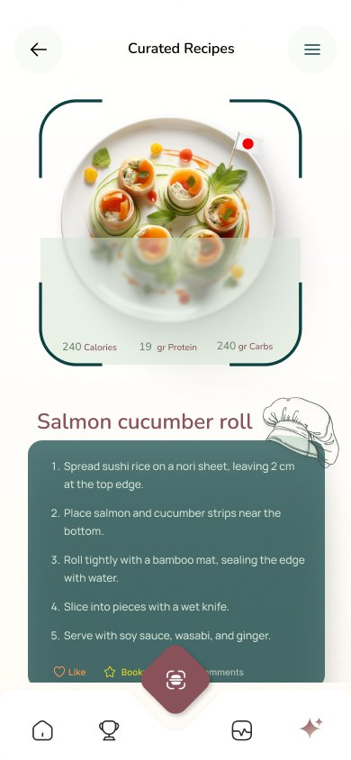
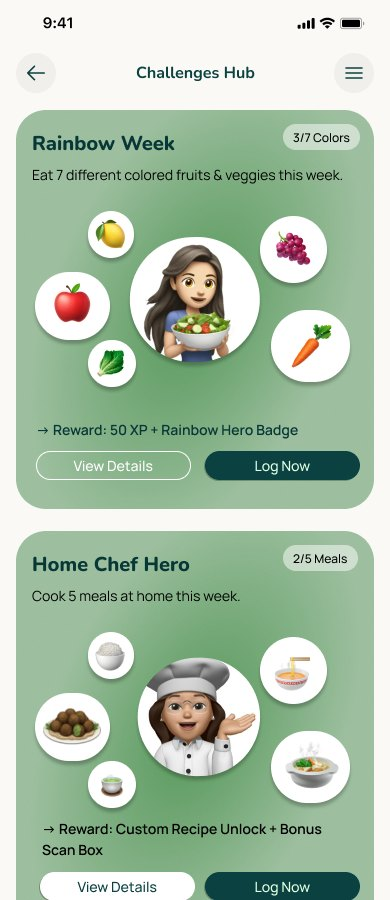

Health & nutrition · Mobile AI · Team Sixth Sense
NutraScan
An AI food buddy that scans your fridge, reads your mood and turns what you have into healthier meals.

01 · Overview
Small, consistent steps towards health
Most health apps ask you to count. NutraScan asks how you feel, looks in your fridge and suggests a healthy meal you can actually make, then turns good habits into weekly challenges.
- Role
- Product designer
- Team
- Team Sixth Sense
- Platform
- Mobile app
- Scope
- Brand · UX · UI
- Tools
- Figma
02 · Problem
Health apps feel like homework
- Cluttered and data-heavyLeaders like HealthifyMe overwhelm casual users.
- Calorie fatiguePeople want intuitive eating, not strict tracking.
- Weak on local foodApps like Lifesum miss Indian and home-cooked meals.
03 · Approach
How we tackled it
- Competitor SWOTHealthifyMe and Lifesum: what to keep, what to drop.
- Mood before metricsOpen on "what's the vibe today?", not a calorie count.
- Scan, don't typeThe camera replaces manual logging.
- Habits as playWeekly challenges, badges and rewards.
Brand
A buddy, not a coach or a calculator
- N + S blendThe mark joins the letters of NutraScan.
- AI diamondThe spark at the centre is the AI, always analysing.
- Wave cutA non-linear journey: consistency over perfection.
Nunito for headings · Manrope for body · tagline "Your pocket food buddy"
04 · Key screens
Scan, see, cook, repeat.
AI does the noticing: what's in your fridge, what's on your plate, how you feel. You decide what to eat.

Why AI here: people won't log every meal, so one photo of the fridge does the work.
- 1
Vibe check-inEmotional design
Starts with how you feel, not what you ate.AI tunes meal ideas to your mood - 2
Scan your fridgeClear entry point
The main action, right on top.AI spots ingredients from one photo - 3
Your progressPositive reinforcement
Streaks and badges, never guilt.

Why AI here: labels are hard to read, so AI identifies the food and estimates nutrients in seconds.
- 1
Meal at a glanceGlanceability
Name, calories and portion first. - 2
Nutrient barsVisual hierarchy
Bars compare faster than numbers. - 3
Ingredients identifiedTransparency
Shows what the scan found.AI recognises each ingredient

Why AI here: "what can I make?" is the hardest question, so AI matches recipes to what you have.
- 1
Food categoriesRecognition over recall
Pictures, not menus. - 2
"Matches 4 ingredients"Relevance
Ranks by what is already in your fridge.AI matches recipes to your scan - 3
Scan buttonFitts's law
Centre of the tab bar, always one tap away.

Why AI here: a plated dish has no label, so AI estimates it from a photo.
- 1
Scan overlayImmediate feedback
Calories, protein and carbs on the photo.AI estimates nutrition from the dish - 2
Step-by-step methodChunking
Five short steps, easy to follow while cooking.

Why AI here: habits stick when they log themselves, so each scan counts toward a challenge.
- 1
Rainbow WeekGamification
Eat 7 colours this week: 3/7 done. - 2
RewardsVariable rewards
XP, badges and a mystery box every 10 scans. - 3
Log NowOne-tap action
Log in one tap.AI counts colours from each scan
05 · Impact
1 scanfrom fridge to a healthy recipe- Mood before metrics. Starting with feelings made the app feel kinder than calorie trackers.
- Play keeps people coming back. Challenges turn healthy eating into small weekly wins.
- Next: a voice assistant for real-time food help, a deeper Indian food library, and usability tests.